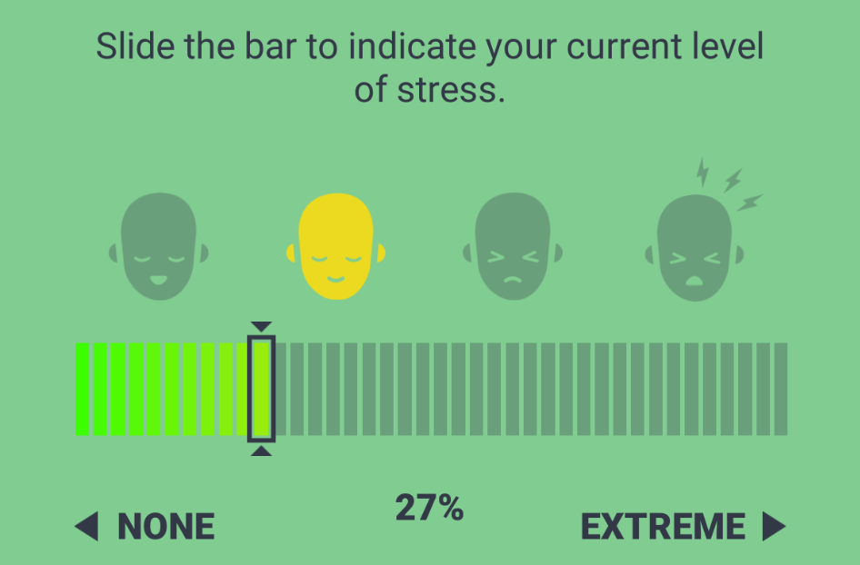

Reported stress problem
Problem
- Reported_stress variables are defaulting all observations to
-1,left_blank,NA, etc.
Objectives
Describe the problem.
Explain the origin of the problem.
For the purpose of this report, we are going to use the data from BecharaReport API gathered in 2023-02-11. This data has 1’256’346 observations and 80 variables, and can be found in the following Dropbox path:
Mobio Interactive Dropbox/Research/RWD/Shared R Scripts/Input csv/BecharaReportFull-2023-02-11T01_34_20.csv.
Obj 1: Describing the problem
After applying the procedure to reduce the number of duplicates in the data, we have 71’138 observations in data.
About Reported stress
Reported stress variables (reported_stress_pre & reported_stress_post) capture the information from the stress slider in the snapshot interface:

This information is present in all types of observation with the exception of account_creation.
When this field of the snapshot interface is left blank or there’s an error in capturing this information, the application fills this variable with default values as -1, -1.0, left_blank, NA.
This scenario should be the exception, but we will see in the data that is actually the norm.
In this plot we have filtered out the observation type that are account_creation, then we grouped the observations by month and divide the normal values between 0 and 1 from the missing default values: -1, -1.0, left_blank, NA.
As we can see in the plot, historically we had more missing default values than normal values which is data we can work with.
Although, if we consider zero also as a possible value inserted when data is missing, we can see that since 2022 we have only recorded missing default values in the variable reported_stress_pre.
As in the previous case, reported_stress_post has historically been populated with missing default values.
And if we considered zero as a possible default value then since 2022 we had only recorded default values in this two variables.
Obj 2: Origin of the problem
When checking the SQL Pad, we can see that the problem is also present in the database.
For example, if we query a tabular table to count the values of reported_stress_pre between 2022 and 2023 we could see the following using this SQL syntax in each server:
select reported_stress, COUNT(*)
from snapshots
where
(start BETWEEN '2022-01-01'AND '2023-02-12')
GROUP BY reported_stress| reported_stress | count |
|---|---|
| -1 | 536 |
| reported_stress | count |
|---|---|
| 0 | 4 |
| -1 | 4655 |
| reported_stress | count |
|---|---|
| -1 | 215 |
| reported_stress | count |
|---|---|
| -1 | 23 |
| 1 | 2 |
| reported_stress | count |
|---|---|
| 0 | 274 |
| -1 | 1122 |